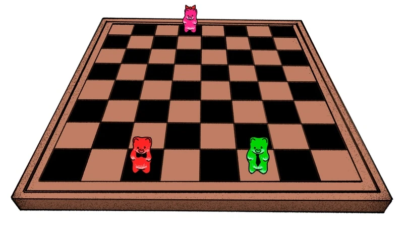
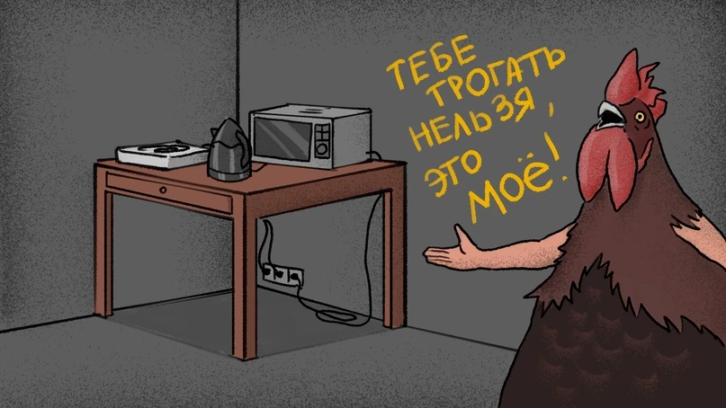

Mr. Nobody отправляется на длительное свидание, где поддается сентиментальным порывам и «занимается отчаянием»
До девяти лет я был влюблен. Кажется, ее звали Алена. Под моей кроватью находилась маленькая шахматная доска, а на ней — мармеладные мишки в количестве трех особей. Одним из медведей был я. Вторым — мой соперник на, как говорится, любовном фронте, — Артем. Третий мишка олицетворял Алену. Последний стоял на одном краю доски, а первые два — на другом.

Когда я оказывал девочке какие-либо знаки внимания (помогал донести портфель или, например, угощал булочкой в столовой), мой мармеладный аватар продвигался на клетку вперед. Если я замечал, что Алена отвечает на ухаживания Артема благосклонностью, его мишка тоже делал шаг к цели. По какой-то причине дурацкую доску и результат этой игры я считал чем-то судьбоносным и непреложным — по-настоящему верил, что Алена выйдет замуж за того, чей мишка доберется до нее первым. Конечно, я не был настолько глуп, чтобы полагать, будто существует прямая связь между доской под моей кроватью и чувствами одноклассницы, но казалось, тут кроется нечто метафизическое.
Каждый вечер, вспоминая прошедший день и передвигая мармеладных медведей, я считал, что заглядываю за занавес жизни. С тех пор прошло лет двенадцать, и теперь за занавесом оказался я сам.
Мой соперник из обычного мальчика Артема превратился в саму жизнь, а девочка Алена сменилась Настей. Сколько бы усилий я ни прикладывал, реальность была на шаг впереди. Фраза «жизнь обгоняет мечту» приобрела мрачный оттенок. Для Насти я оставался чаще всего голосом или сообщением в телефоне — чем-то отдаленно эфемерным. В то время как мир вокруг был осязаемым и требовательным. Длительные свидания раз в три месяца (а то и в четыре) обостряли противоестественность, которая заключалась в отсутствии рядом близкого человека (надеюсь, вы простите мне такую банальность). Но мы продолжали: она «из-за любви», а я — из слабости.
Первый длительный приезд Насти был отмечен печатью скотской пошлости, резко контрастировавшей с эмоциональным подъемом, который она чувствовала по дороге в лагерь. Сборы, покупки, приготовления и даже продавщица билета на поезд — все казалось Насте больше, чем было на самом деле, — будто все знало, куда она едет и чего так ждет. Сознание раскрашивало жизнь красками поярче, повсюду оставляя один и тот же след, подтекст и смысл: ты едешь к нему.
И именно поэтому с момента, когда она приехала в колонию, и до того, как зашла в нашу с ней комнату, все, что Настя видела, было откровенно убогим, казенным и непристойным.
Длинная очередь каких-то серых, изможденных людей, волокущих большие клетчатые сумки к окошку приема передач. Родственники осужденных делились на три категории. Первых можно было выявить по виноватому виду и странной безропотности — женщина, принимающая передачи, сразу это чувствовала и начинала кромсать содержимое сумок. Видимо, из-за необъяснимой любви большинства государственных служащих к законному хулиганству. Вторые принимали вид заискивающий и лизоблюдский, как придворные шуты: называли лагерных работников по имени-отчеству, разбавляя речь уменьшительно-ласкательными. Третьи же беспрестанно и шумно спорили, ругались и качали права — их передачи, как и в первом случае, беспощадно кололись, рубились и резались. В очереди преобладали люди цыганской национальности, что скорее обусловлено местностью, нежели генетической предрасположенностью к преступлениям. Последний тезис принадлежит Насте, хотя мне он кажется очень спорным: даже в уголовном мире рекомендуется не подпускать цыган к «общим» делам (т.е. сборам денег и других благ) по целому ряду причин, емко сформулированных Томми из «Большого куша».
Отстояв очередь к окошку передач, Настя взяла бланк на разрешение длительного свидания и направилась к начальнику колонии — нужна была его подпись. Когда я писал о пошлости и непристойности, речь в основном шла о разговоре Насти и «хозяина». Оказалось, что начальник колонии хотел выяснить у нее, не шлюха ли она часом, и если да, то какова этого часа стоимость. Причем дело было не во внешнем виде (девушка выглядела более чем благопристойно), а только в том, что ранее она на длительные свидания не приезжала и официально моей женой не была. Разумеется, Настя оскорбилась, но перешагнула через себя и мягко дала понять, что предположения «хозяина» беспочвенны: знакомы мы черт знает сколько, а возможность приехать выдалась только сейчас. Заодно она тактично осведомилась: может, у меня был опыт со шлюхами? Начальник, видимо, обративший внимание на отсутствие колготок в сеточку и жвачки, поминутно вылезающей пузырем изо рта, извинился за свои «смелые», как он выразился, предположения, залепетав что-то о долге, работе и всяком таком, чем обычно оправдываются и мотивируются самые ужасные вещи.
Что чувствовал я, в каком состоянии был и как долго ждал этого дня — писать не буду. У меня получается плохо и тривиально, к тому же всякие душевные бури мало кому интересны. Многие в жизни испытывали подобное, что, кстати, не мешает презрительно морщиться, услышав очередную банальность. Мои приготовления заключались в следующем. Я постирал и погладил робу, хоть и знал, что Настя будет видеть меня в лагерной одежде меньше минуты — предполагалось сразу снять ее и надеть штаны с футболкой. Взял флешку с картридером, куда скачал «Интерстеллар», «Приключения медвежонка Паддингтона», какой-то фильм Джима Джармуша и около двух гигабайт тщательно подобранной музыки. Прихватил сменное белье, зубную щетку, пасту и мыло.
Настю и ее вещи обыскали — шмон проводила женщина, и это как будто бы сглаживало необходимость раздеваться догола. Потом моей подруге устроили краткую экскурсию по помещениям длительных свиданий: Насте, и без того шокированной происходящим (сначала предположили, что она проститутка, а затем полностью раздели), обстоятельно объясняли тюремные порядки.

— Это, — женщина указывала на угол кухни, где стояли одноконфорочная плита, чайник, микроволновка и маленький шкафчик, — петушиное. Тебе это трогать нельзя! А сейчас бери сумки, и я тебе покажу комнату.
Настя шла за своим Вергилием. С кухни они попали в длинный коридор, по левую сторону которого виднелся ряд дверей (всего восемь комнат). Справа располагалась маленькая комнатка с раковиной, а за ней — уборная, душевая. Настя не слишком вникала в экскурсию, с облегчением подмечая наличие щеколд на дверях. По коридору лениво бродили три неприлично толстых кота, которые то и дело жалобно и совершенно неубедительно мяукали (все три похожи на кота из мема «Неси черешню»).
Шестая комната, с нагромождением предметов и мебели, выглядела так, будто когда-то была просторной, а потом кто-то взял и уменьшил ее ровно настолько, чтобы содержимое не повредилось — все стояло вплотную друг к другу. Вид из окна открывался паршивый: за решеткой виднелась полуразрушенная промзона со зданиями, будто попавшими в сетку из ржавой колючей проволоки. Кровать изголовьем и изножьем упиралась в стены. Стол стоял возле правой стены, вплотную к кровати. Неизбежные два стула и вешалка. По левую сторону стены, сразу перед кроватью стоял холодильник. На нем — микроволновка и чайник. Перед этим бытовым сооружением — небольшой телевизор на высокой тумбе. Дверь располагалась как раз между телевизором и вешалкой. Имелось около полутора квадратных метров свободного пространства, большую часть которого занимали привезенные сумки.
Конечно, Насте гораздо сложнее, чем мне, давалось все это: теснота, отсутствие возможности выйти на улицу. У кого-то на кухне сгорела курица, и весь коридор заволокло едким дымом. Чей-то маленький ребенок орал так часто, что казалось: во всем мире нет вещи, способной его успокоить. Женщина, которую предсказуемо звали Ларисой, дала моей подруге журнал посещений, в который нужно было вписать свои Ф.И.О. и род занятий, — Настя стала единственным журналистом среди продавщиц и домохозяек, что ее скорее огорчило, нежели воодушевило.
С моей стороны все было гораздо проще: выйти из барака, миновать «вахту», пройти обыск и зайти в комнату. Шмон ограничился похлопыванием по карманам — я так привык ждать от ментов худшего, что обыск такого рода казался чем-то дружеским, будто здороваются старые приятели.

Пройдя шмон, я сразу бросился в коридор, напрочь позабыв спросить у женщины номер комнаты. Пришлось возвращаться, конфузясь из-за своей оголтелой сентиментальности, которую, думаю, было заметно и с Луны.
— Извините, — интересуюсь, — а какая комната?
Лариса лукаво взглянула на меня, затем на мой нагрудный знак с фамилией и, улыбнувшись, ответила:
— Шестая, Mr. Nobody, шестая. А куда это ты сначала ломанулся? — спросила она, но я уже бежал обратно.
Я много раз представлял себе эти моменты — как зайду в комнату, увижу Настю. Как отреагирует она, как поведу себя я. Тогда, стоя напротив двери с номером шесть, я слышал, как колотится мое сердце. Сделав несколько глубоких вдохов, я вошел. Настя сидела на кровати, выкладывая что-то из сумки на стол. Ее будто током ударило. Секундное замешательство — и она порывисто бросилась на меня: как в первый раз, на улице перед кафе.
Окно стало стало недоступно свету, а вид из него — недоступным нам: мы повесили на бессмысленно пустой карниз шерстяное одеяло, которое было в комнате. Я достал из своего носка картридер, и в комнате заиграли Radiohead, Sigur Ros и еще много всего, что моя память уже не сможет откопать. Ее любимого Дельфина скачивать я не стал — слишком много серьезного и печального.
Настя привезла огромное количество еды, но мне было не до этого. Подруга чуть ли не уламывала меня попробовать какое-нибудь блюдо. Прибавляла: «А себе я бутерброд с хумусом сделаю», — будто я стеснялся есть. Но не хотелось ни спать, ни отвлекаться на еду, да и вообще выходить из комнаты, как у Бродского. Каждая секунда ценилась так, как никогда в жизни.
Год назад я читал текст в каком-то околоинтеллектуальном паблике: девушка писала о том, как приезжала к своему мужу на длительное свидание. «Мы занимались не сексом. Мы занимались отчаянием», — не слишком лестно для партнера рассказывала она. Может, дело было в браке — секс надоевших друг другу людей превращается в нечто мрачно-бытовое. А может, в том, что они виделись не впервые.
Тогда мне оставалось сидеть больше 10 лет — никаких шансов, никаких надежд. После первого раза было тяжелое послевкусие — все происходит здесь, а не там, где должно. Но потом это прошло, и удалось забыть, где мы, — словно тесная комната с завешенным окном стала маленьким, принадлежащим только нам миром.
Один прекрасный писатель говорил, что в религии кроется какая-то общедоступность, уничтожающая ценность откровений. Само присутствие Насти, ее страшная доступность (разумеется — в буквальном смысле — я мог просто взять и прикоснуться к ней) были ценнейшим откровением для меня. Я корил себя за то, что взял и позабыл все это, но был рад, что могу открыть заново, уже в ней: большие глаза, полуоткрытые влажные губы, слабость плеч и нежность тонкой шеи, обхваченное тугими лямками тело и потом — ее нагота, вся — нечто хрупкое, бледное и нежно розовое.
Мы выбирались только по ночам, чуть ли не короткими перебежками. Я крал на кухне сахар, потому что Настя забыла его купить. Мы ходили в душ вдвоем и, главное, старались не попадаться на глаза нашим соседям — потому что слишком громко занимались «отчаянием». Поэтому и включенная мной музыка становилась громче. Стены были толстые, но гипотетический шанс, что кто-то будет проходить мимо двери, оставался, а оттуда точно слышно все.
Трое суток, как всегда в случаях, когда мы бываем счастливы, пролетели очень быстро. В последнее утро на нас будто бы напало оцепенение — осознание того, что через час нам в любом случае придется расстаться, подействовало оглушительно и отрезвляюще. Настя собирала сумки, которые я должен был забрать с собой в лагерь. Все ее движения словно олицетворяли, делали реальным и осязаемым наше прощание. Когда в дверь деликатно постучали и напомнили, что у меня осталось полчаса, Настя заплакала и от всего этого мне захотелось заплакать самому — впервые за черт знает сколько лет. Сдерживая слезы и успокаивая Настю чем-то лживо-бессмысленным вроде «все будет хорошо», я не мог отвести взгляд от часов.

Один американский стендап-комик заметил, что на протяжении всей жизни мужику приходится сдерживать свои чувства, потому что люди неправильно расценивают проявления эмоций. Назвал щенка милым — ты педик, заказал капучино и блинчики с шоколадным сиропом — ты педик; заплакать мужику дозволяется, только если его отца и мать переехал бульдозер. Вот именно поэтому мужики умирают в 45 лет «ни с того ни с сего». Выходит, лучше бы я заплакал.